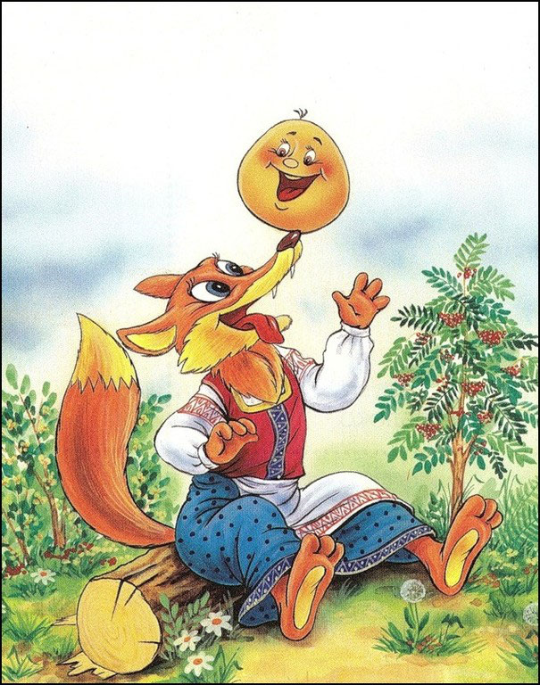

Кулинарное изделие
Жили-были старик со старухой. Вот и говорит старик старухе: — Поди-ка, старуха, по коробу поскреби, по сусеку помети, не наскребешь ли муки на колобок. Взяла старуха крылышко, по коробу поскребла, по сусеку помела и наскребла муки горсти две. Замесила муку на сметане, состряпала колобок, изжарила в масле и на окошко студить положила. Колобок полежал, полежал, взял да и покатился — с окна на лавку, с лавки на пол, пó полу к двери, прыг через порог — да в сени, из сеней на крыльцо, с крыльца на двор, со двора за ворота, дальше и дальше. Катится Колобок по дороге, навстречу ему Заяц: — Колобок, Колобок, я тебя съем! — Не ешь меня, Заяц, я тебе песенку спою: Я Колобок, Колобок, Я по коробу скребен, По сусеку метен, На сметане мешон Да в масле пряжон, На окошке стужон. Я от дедушки ушел, Я от бабушки ушел, От тебя, зайца, подавно уйду! И покатился по дороге — только Заяц его и видел! Катится Колобок, навстречу ему Волк: — Колобок, Колобок, я тебя съем! — Не ешь меня, Серый Волк, я тебе песенку спою: Я Колобок, Колобок, Я по коробу скребен, По сусеку метен, На сметане мешон Да в масле пряжон, На окошке стужон. Я от дедушки ушел, Я от бабушки ушел, Я от зайца ушел, От тебя, волк, подавно уйду! И покатился по дороге — только Волк его и видел! Катится Колобок, навстречу ему Медведь: — Колобок, Колобок, я тебя съем! — Где тебе, косолапому, съесть меня! Я Колобок, Колобок, Я по коробу скребен, По сусеку метен, На сметане мешон Да в масле пряжон, На окошке стужон. Я от дедушки ушел, Я от бабушки ушел, Я от зайца ушел, Я от волка ушел, От тебя, медведь, подавно уйду! И опять покатился — только Медведь его и видел! Катится Колобок, навстречу ему Лиса: — Колобок, Колобок, куда катишься? — Качусь по дорожке. — Колобок, Колобок, спой мне песенку! Колобок и запел: Я Колобок, Колобок, Я по коробу скребен, По сусеку метен, На сметане мешон Да в масле пряжон, На окошке стужон. Я от дедушки ушел, Я от бабушки ушел, Я от зайца ушел, Я от волка ушел, От медведя ушел, От тебя, лисы, нехитро уйти! А Лиса говорит: — Ах, песенка хороша, да слышу я плохо. Колобок, Колобок, сядь ко мне на носок да спой еще разок, погромче. Колобок вскочил Лисе на нос и запел погромче ту же песенку. А Лиса опять ему: — Колобок, Колобок, сядь ко мне на язычок да пропой в последний разок. Колобок прыг Лисе на язык, а Лиса его — гам! — и съела. Вот и сказке Колобок конец, а кто слушал - молодец!
